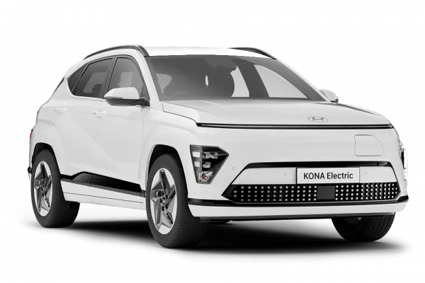
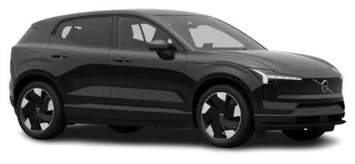
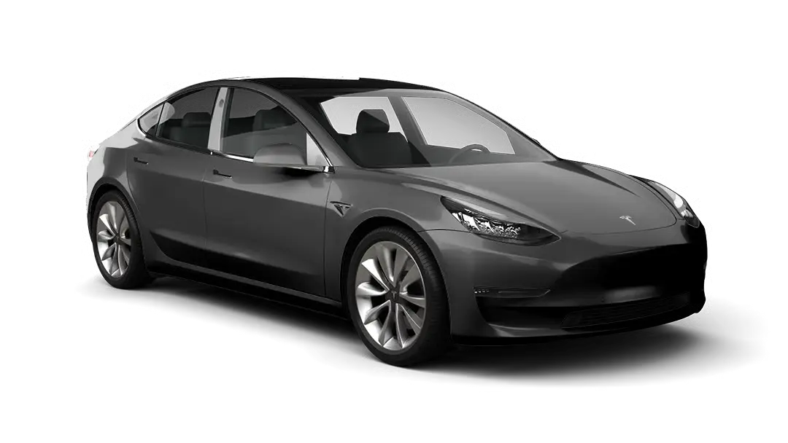

Bolig og Bil
Vi tilbyr løsninger for å beskytte både boliger og biler mot v&r og vind.
Våre partnere tilbyr:
- Biler som passer klimaet
- Verksted
- Boligopppussing og vedlikehold
Biler som passer klimaet
Her er noen bilmodeller som er godt tilegnet Regnbyen.
| Merke / Bilde | Modell / Fordeler | Pris / Ulemper |
|---|---|---|
| Hyundai | Kona Electric | 340000 kr |
 |
+ Etablert modell som har v&rt brukt i Norge lenge, mange reservedeler, god serviceinfrastruktur. + Meget godt utstyrsnivå i nyere modeller, god rekkevidde (WLTP ~ 500+ km for Long Range) i forhold til pris. + Komfort i by og på vei, relativt god plass til bagasje og passasjerer, brukbar totalvne. + Prisnivået gjør at mange kan få “mye bil for pengene”. + Forvarming, moderat strømforbruk, og gode vinteregenskaper med riktige dekk. |
- Hurtigladingstopp (maks effekt) er ikke like høy som de aller raskeste elbilene. - Når man velger større hjul eller mer utstyr, drar vekten og forbruket opp, rekkevidden faller mer vinterstid. - Ikke firehjulsdrift (for de fleste varianter) - begrenser grepet på veldig isete / snødekte veier. - Innvendig materialfølelse kan v&re noe enklere enn hos premiummerker. - Skjerm-menyer etc. blir av noen opplevd som mindre intuitive. |
| Volvo | EX30 | 345900 kr |
 |
+ Meget kompakt SUV som er lettmanøvrert i by, smale gater, trange parkeringsplasser. + Moderne sikkerhetsfunksjoner og Volvo-kvalitet. + Gode vinterhjulpakker finnes fra fabrikken - bedre grep og trygghet. + Valgbar kjøremodus gir fleksibilitet etter v&r og bruk. + Lavere forbruk pga mindre vekt/størrelse enn store SUVer (i by & kupert terreng). |
- Begrenset plass i noen varianter; for stor familie kan det bli trangt. - Rekkevidden synker merkbart ved kaldt v&r, og batterioppvarming blir viktig. - Vinterdekk / piggfrie vs piggdekk-valg blir viktig. - For de som kjører mye motorvei: tilbudet her ikke like optimalt som større elSUVer. - Pris med alt ekstra (hjulpakke, utstyr) kan komme oppover. |
| Tesla | Model Y Long Range RWD | 610000 kr |
 |
+ God ladekapasitet og tilgang til Supercharger-nettverket som gjør langkjøring mer praktisk, også over fjell og mellom fjorder. + Firehjulsdrift-versjoner gir bedre grep vinterstid (snø & is). + Meget god varme, komfort, og forvarming gjør vinterkjøring mer komfortabel. + God bagasjeplass og praktisk SUV-form kombinert med elbilfordeler. |
- Høyere pris sammenlignet med mange andre elbiler. - Kvalitetskontroll og byggekvalitet har v&rt kritisert i enkelte tilfeller. - Enkelte opplever at interiørmaterialene ikke er like luksuriøse som hos premiummerker. - Størrelsen kan gjøre den mindre smidig i trange bymiljøer. |
Verksted
Verkstedene finner du i:
Vi er veldig stolt av ha de som partner.
Praktisk informasjon for deg som bor i Bergen
Som ny boligeier i Bergen er det viktig å kjenne til hvordan klimaet kan påvirke både hverdag og bolig.
Vi har samlet noen tips, ofte stilte spørsmål og samarbeidspartnere som kan hjelpe deg.
Ofte stilte spørsmål
Hvordan påvirker regnet boligen min?
Regnet kan føre til fuktproblemer i kjeller og yttervegger. Bruk produkter som tåler høy luftfuktighet, og sjekk drenering og takrenner jevnlig.
Hva gjør jeg for å hindre fuktskader?
Installer god ventilasjon, bruk fuktsikre materialer, og vurder en samarbeidspartner som kan levere løsninger for å stoppe inngang av luftfuktighet.
Hvilken maling bør jeg bruke?
Velg en maling utviklet for kystklima og mye nedbør. Vi anbefaler ByggPartner AS sine løsninger som er testet for ekstremv&r.
For mer informasjon, kontakt vår samarbeidspartner ByggPartner AS for råd og produkter som passer ditt hjem i Bergen.